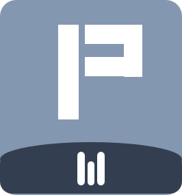

ابنِ برومبتًا مثاليًا ومستوفى لأي أداة ذكاء اصطناعي
اختر قالبًا جاهزًا أو املأ الحقول — واحصل على برومبت مثالي جاهز للنسخ فورًا.
اسأل قبل البدء 🙋
إذا وجدت معلومة ناقصة، يطرح النموذج سؤالًا محددًا بدل التخمين.
تفكير خطوة بخطوة 🧩
يحلّل المهمة في مراحل قبل الإجابة النهائية → نتائج أدق للمهام المعقدة.
مراجعة ذاتية قبل التسليم ✅
يتحقق أن كل المتطلبات مستوفاة ويصحح الأخطاء قبل أن يعطيك الناتج.
أمثلة (Few-Shot) 🎯
تعطي النموذج نموذجًا يقلّده — من أقوى التقنيات لضبط الأسلوب.
إجابة مباشرة بلا مقدمات 🎯
يحذف عبارات مثل "بالتأكيد!" ويبدأ بالقيمة فورًا.
اذكر المصادر والمراجع 📎
يطلب روابط/مراجع للمعلومات غير الشائعة مع تمييز الافتراضات.
قدّم 2–3 بدائل وقارنها 🧪
يعرض خيارات متعددة مع إيجابيات وسلبيات كل واحدة وتوصيته.
وجهات نظر متوازنة ⚖️
يعرض الرأي المؤيد والمعارض ثم يستنتج موقفًا محايدًا.
بسّط اللغة (ELI5) 🧒
يجعل الشرح مفهومًا للمبتدئ مع تجنّب المصطلحات المعقدة.
خطة تنفيذ قابلة للقياس 🗓️
يترجم النتيجة إلى خطوات مرقّمة بمواعيد ومعايير نجاح واضحة.
تحويل الطلب إلى برومبت صور 🖼️
ينشئ برومبت إنجليزي جاهزًا لـ Midjourney / DALL·E / Stable Diffusion.
ابدأ بكتابة المهمة في اللوحة… وسيظهر البرومبت الكامل هنا فورًا.
اضغط على أي بطاقة لفتح الموقع الرسمي + البديل المجاني مفتوح المصدر، أو استخدم الزر الخاص بكل رابط.